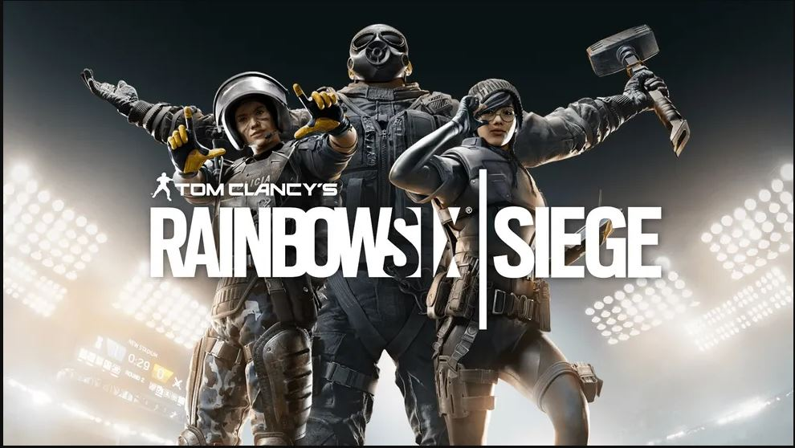
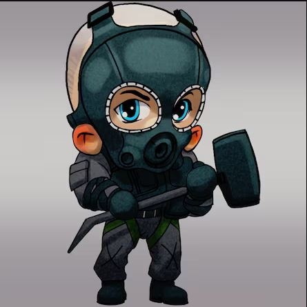
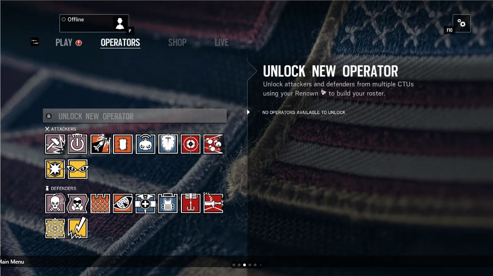
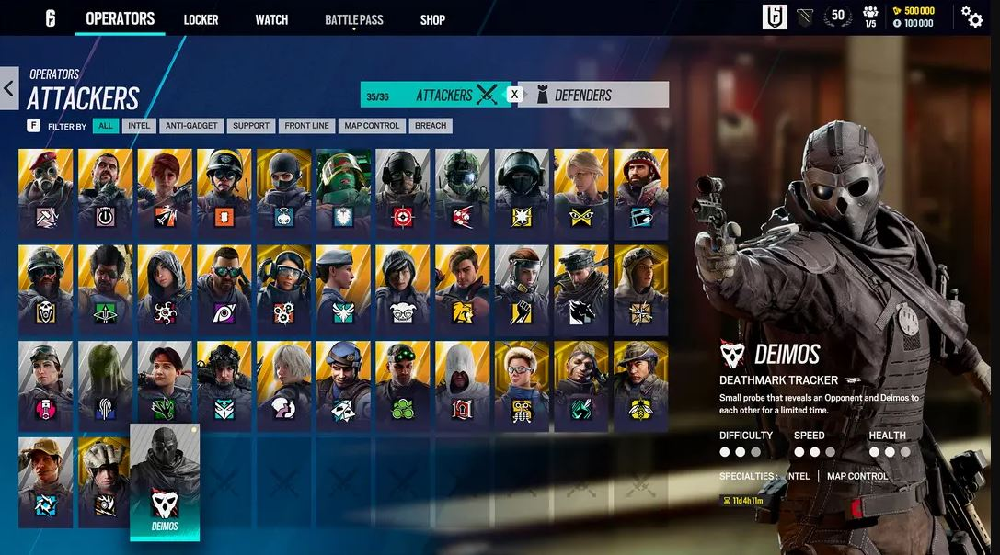

Comecei vendo um video do jogo certa vez, onde criei um interesse pelo game, decidi comprar e comecei a jogar.
Descobri que era habilidoso, de certo modo para o jogo e fui investindo tempo. Lá fiz amigos que carrego até hoje comigo.
E percebi que jogar em esquadrão era MUITO mais vantajoso. E pelo motivo dos rounds durarem 3 minutos
cada abate dos inimigos acaba se tornando muito prazeroso, assim como ajudar o time também é algo muito bom.

Clique aqui
Para ver o meu primeiro highlight, postado em 2018.
Mas gosto de dar o adendo que comecei a jogar em 2016, na Season
Skull Rain, onde foram lançados os operadores brasileiros.
Isso gerou um hype imenso na época.
Como fui parar no Competitivo amador
Jogando a um tempo e de forma muito mais consistente, com várias pessoas de níveis diferentes,
acabei vendo que tinha uma certa facilidade naquela época no jogo (2019), e com mais alguns amigos que
jogavam junto, tivemos a ideia de testar como seria um time no competitivo amador, e então
começamos a treinar juntos. Dai pra frente, virou um vicio por uns 3,4 anos, entre muitos
campeonatos de níveis altos e baixos. Acabou que na verdade, nunca cheguei a ganhar muita
coisa, mas me divertia bastante naquela época, foi de ouro.
Para descontrair, agora vai uma pergunta sobre o game.
Qual o nome da equipe de operações especiais da vida real que o Sledge está ?

E hoje, como estou com o jogo ?
Hoje, ainda jogo regularmente em finais de semana, e alguns dias da semana, mas esse jogo muda muito conforme passa o tempo
a sensação de ficar perdido em um mapa novo por exemplo, pra mim é bem engraçada de certo modo.
Rainbow six se expande constantemente, veja essa imagem para comparar da tela de operadores de quando o jogo lançou e como ele está hoje.

Lançamento, por volta de 2015, 16.

Hoje em dia (28/03/25).
São muitos operadores e mecânicas novas, porém estamos falando de um jogo de praticamente 10 anos, então tem que ser
assim pro jogo não cair no esquecimento.
É muito louco pra mim pensar que eu jogo esse game a tanto tempo assim, e apesar de eu sempre me irritar jogando, gosto da sensação
de entrar nele, jogar, mas isso com pelo menos um amigo junto, jogar sozinho é pior que tortura.
Nesse site aqui, você pode ver o seus status no R6, infelizmente ele só pega a um, dois anos atrás,não vai além disso.
Mas você pode ver o status de qualquer pessoa só com o nick. Se quiser ver o meu, selecione PS4 e digite Rayprig.
(1800 horas de jogo, convertendo da 75 dias. Se fosse critério pra processo seletivo, eu virava prefeito de cara.)
E agora, vou deixar um video do canal que eu tinha com meus amigos.
São tempos que nunca mais vão voltar, mas aproveitei cada segundo, foi uma parte importante da minha vida
querendo ou não, tenho que ser grato mesmo com toda raiva que esse jogo me fez e faz passar.
E pra você que chegou até aqui